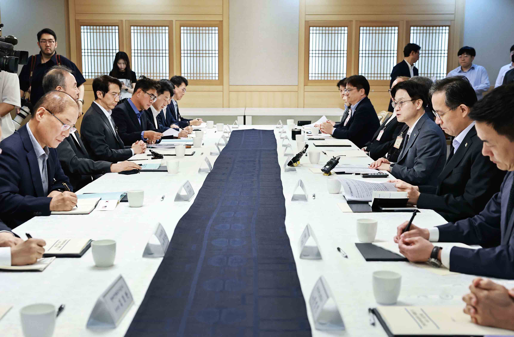
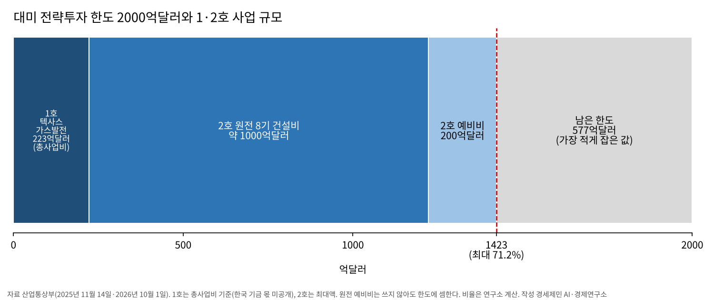
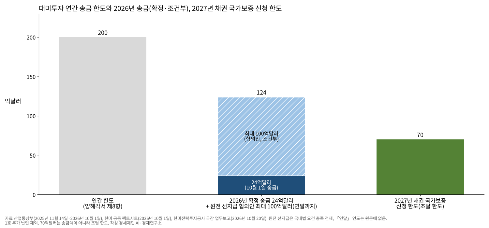
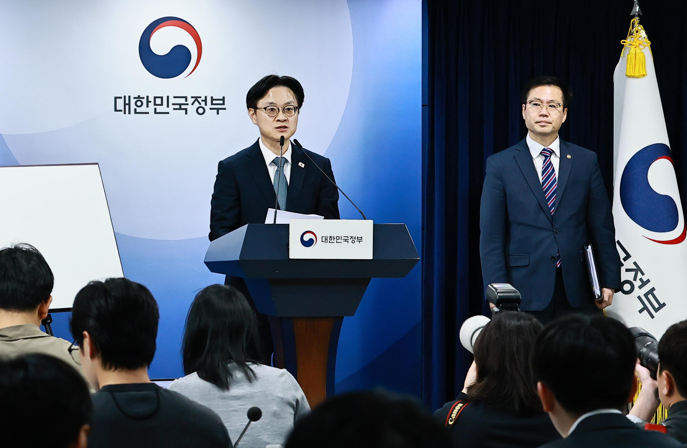

[대미투자 브리핑①] 대미 전략투자 첫 송금 24억달러, 1·2호 사업 규모가 한도 2000억달러의 최대 71%
텍사스 가스발전 총사업비 223억달러, 원전 8기 최대 1200억달러… 알래스카 LNG는 검토 단계
외평기금·한국은행 자산 위탁해 송금… 한국은행, 9월 말 보유액 감소 요인에 위탁 꼽아
원리금 회수 전 5대5, 회수 뒤 1대9 배분… 내년 채권 국가보증 한도 70억달러 신청
AI경세제민=김갑봉 기자 | 한국 정부가 대미 전략투자 첫 투자금 24억달러를 10월 1일 미국으로 보냈다. 한미 정부는 같은 날(미국 시각 9월 30일) 첫 사업 추진계획을 발표했다. 첫 사업은 미국 텍사스주 엔시날에 짓는 가스복합화력발전소다.
24억달러는 10월 1일 매매기준율(1달러 1355.7원)로 약 3조2537억원이다(연구소 계산). 이 글의 원화 환산은 모두 이 환율로 셈했다. 이형일 부총리 겸 재정경제부 장관은 10월 6일 국정감사에서 송금을 확인했다.
한미가 내놓은 사업은 셋이다. 텍사스 발전소(총사업비 223억달러)와 원전 8기 건설 틀(최대 1200억달러)은 추진한다. 알래스카 액화천연가스(LNG) 사업은 검토에 들어간다.
앞의 둘을 더하면 1423억달러(약 192조9161억원)다. 한국이 약속한 대미투자 2000억달러의 71.2%다. 1호는 총사업비로, 2호는 최대액으로 셈했다(연구소 계산).
발표 당일 송금, 9월 요청에 별도 협약
2025년 7월 30일 한미는 관세협상에서 큰 틀에 합의했다. 미국은 4월에 예고한 25% 대신 그해 8월 7일부터 상호관세 15%를 매겼다. 대가는 투자 약속이었다. 14개월 뒤 첫 투자금 24억달러가 나갔다.
약속은 2025년 11월 14일 전략적 투자 양해각서에 담겼다. 모두 3500억달러다. 정부가 직접 투자하는 2000억달러와 조선협력투자 1500억달러다. 두 몫은 성격이 다르다.
2000억달러는 한국이 직접 출자하고 수익을 미국과 나눈다. 조선협력투자 1500억달러는 기업 투자와 보증, 선박금융을 돕는 몫이다. 수익은 모두 한국 기업에 돌아간다.
국회는 2026년 3월 12일 「대한민국과 미합중국 간 전략적투자의 운영 및 관리를 위한 특별법」을 의결했다. 법은 6월 18일 시행됐다.
시행일에 한미전략투자공사가 세종시 나성동에서 출범했다. 자본금 2조원은 정부가 모두 대고, 공사는 등기일부터 20년 동안 운영한다.
절차는 이렇다. 산업통상부의 사업관리위원회가 사업성을 따지고, 재정경제부 장관이 위원장인 운영위원회가 투자 의사를 의결한다. 국회 보고와 대미 협의를 거쳐 미국 대통령이 투자처를 고르면 운영위원회가 집행을 의결한다.
시행령은 사업 기간 한국이 받을 수입이 원리금을 모두 덮으면 상업적 합리성이 있다고 정했다. 그렇지 않은 투자는 국회 동의를 먼저 받아야 한다. 정부는 1호 사업이 두 위원회 심의와 국회 보고를 모두 마쳤다고 밝혔다.

송금 시점이 국감에서 문제가 됐다. 박종원 한미전략투자공사 사장은 10월 20일 송금 요청을 9월에 받았다고 했다. 양국 정부가 미국 시각 9월 30일까지 보내기로 합의했다는 설명이다.
박 사장은 양해각서 밖에 별도 협약이 있다고 했다. 이면합의는 아니라고 했다. 관련 자료는 보안상 공개하기 어렵다고 답했다.
양해각서 제7항은 납입일을 정해 두었다. 미국 대통령의 투자처 선정을 통보받은 날부터 최소 45영업일이 지나는 날이다. 국문본도 영문본(no less than forty-five Business Days)도 「최소」다.
정부 설명은 다르다. 이 부총리는 후보자 시절인 9월 국회 서면답변에서 이 문구가 「45영업일 이내(no more than 45 business days)」의 오류라고 밝혔다.
10월 6일 국감에서 임이자 국민의힘 의원이 「45일 이후」 문구를 묻자 이 부총리는 「그런 면이 있다」고 답했다. 45일을 기한으로 하되 한미가 협의하면 더 빨리 보낼 수 있다는 설명이다.
박 사장도 규정상 45일을 기한으로 삼는다고 말했다. 서명한 문서와 정부 해석이 어긋난 채 첫 투자금이 나갔다(연구소 판단).
1·2호 사업 규모 최대 1423억달러, 한도의 71.2%
1호 사업 이름은 프로젝트 스타(Project Star)다. 엔시날에 6472메가와트(MW) 가스복합화력발전소를 지어 인공지능(AI) 데이터센터에 전기를 댄다. 2029년 1단계 상업운전을 시작하고 2032년 모든 설비를 돌린다.
개발은 미국 부동산개발사 릴레이티드(Related Companies)와 발전사 넥스트에라에너지(NextEra Energy)가 맡는다. 루이스에너지(Lewis Energy Group)는 땅과 천연가스, 용수를 댄다.
넥스트에라 등의 발표문을 보면 옆에 5기가와트(GW) 규모 데이터센터가 민간 자금으로 들어선다. 건설이 한창일 때 일자리는 약 8400개다. 발전소가 돌기 시작한 뒤 남는 상시 일자리는 약 170개다.
한미 공동보도자료는 이 사업이 양해각서의 상업적 합리성 기준을 충족한다고 평가했다. 정부는 사업 파트너와 텍사스 전력수요, 예상 전력가격을 근거로 들었다. 전력구매계약은 아직 맺지 않았다. 이 부총리는 그 계약을 앞으로 맺게 돼 있다고 했다.
미국은 터빈을 포함한 한국산 기자재를 다른 비슷한 사업에도 공급할 기회를 줄 뜻을 밝혔다. 김정관 장관은 10월 1일 국민 세금이 들어가는 만큼 상업적으로 합리적인 사업에만 투자하겠다고 했다.
223억달러 가운데 한국 기금이 얼마를 대는지는 공개되지 않았다. 공동 팩트시트도 「총 투자비 223억달러」로만 적었다. 첫 송금 24억달러는 총사업비의 10.8%다(연구소 계산).

2호인 프로젝트 파워(Project Power)는 미국에 대형 원전 8기를 짓는 틀이다. 한국형 APR1400 2기와 웨스팅하우스 AP1000 6기다. 재원은 최대 1200억달러로 건설비 약 1000억달러와 예비비 200억달러다.
2기당 최대 300억달러를 넘는 비용은 기금이 더 대지 않는다. 예비비는 쓰지 않더라도 2000억달러 안에 셈한다. 원전은 아직 틀이다. 입지와 사업구조, 일정은 정해지지 않았다.
사업마다 상업적 합리성 검토와 국회 절차를 다시 거친다. 정부는 국내법 요건을 채운다는 전제로 연말까지 최대 100억달러를 먼저 내는 방안을 미국과 협의했다. 원자로 용기처럼 만드는 데 오래 걸리는 기자재를 미리 사는 돈이다.
알래스카 LNG는 검토를 시작한 단계다. 미국은 철강 등 기자재 관세를 낮추겠다고 했다. 가능한 범위 안에서 장기 LNG 구매계약과 한국의 우선적 접근권도 보장하겠다고 했다.
1호 총사업비와 2호 최대액을 모두 한도에 넣어도 남는 몫은 577억달러다(연구소 계산). 실제 한국 기금 몫이 작다면 남는 몫은 이보다 크다.
일본도 같은 길을 걷는다. 일본은 5500억달러 대미투자에 합의했다. 국회예산정책처가 백악관 발표로 정리한 일본 사업은 2026년 2월 360억달러, 3월 730억달러다.
10월 15일에는 미국 뉴욕주 반도체 공장 사업(총사업비 약 100억달러)이 더해졌다. 세 차례를 합친 1190억달러는 일본 약속액의 21.6%다.
한국의 1·2호 사업 규모는 직접투자 한도의 최대 71.2%, 약속 총액 3500억달러에 견줘도 40.7%다(연구소 계산).
다만 한국 몫 1500억달러는 성격이 다른 조선협력투자다. 일본 반도체 사업은 증설하면 약 210억달러까지 커진다. 산정 기준이 달라 단순 비교에는 한계가 있다(연구소 판단).
재원은 외환보유액 위탁과 정부보증 채권
기금 재원은 셋이다. 공사 출연금, 한국은행과 외국환평형기금이 맡기는 외화자산, 한미전략투자채권이다. 맡긴 외화자산은 대미투자계정에, 출연금은 조선협력투자계정에 쓴다.
채권 원리금을 정부가 보증하려면 국회 동의를 먼저 받는다. 공사는 첫 24억달러를 외평기금과 한국은행 자산 등을 위탁받아 마련했다.
한국은행 집계로 9월 말 외환보유액은 4405억6000만달러다. 8월 말 4422억8000만달러보다 17억2000만달러(0.4%) 줄었다(연구소 계산).
한국은행은 외화예수금 감소와 공사에 맡긴 자산, 달러 아닌 통화 자산의 환산액 감소를 까닭으로 꼽았다. 위탁 금액은 밝히지 않았고, 앞으로 더 맡길 금액과 일정도 정해지지 않았다고 적었다.
양해각서 제8항은 한국이 한 해에 200억달러를 넘는 돈을 내라는 요구를 받지 않는다고 정했다. 돈은 사업 진척에 맞춰 낸다. 외환시장이 불안하면 납입 시기나 규모 조정을 요구할 수 있다. 투자처 선정 기간은 2029년 1월까지다.
규모를 외환보유액에 대 보면 첫 송금 24억달러는 0.5%, 연간 한도 200억달러는 4.5%다. 2000억달러 전체는 9월 말 외환보유액의 45.4%다(연구소 계산).

확정 송금은 24억달러다. 원전 선지급은 최대 100억달러다. 합치면 124억달러다. 「연말」이 2026년 말이면 한 해 한도의 62%다(연구소 계산, 1호 추가 납입 제외).
공사는 내년 재원 일부를 채권으로 마련하려고 70억달러(약 9조4899억원) 한도의 국가채무보증을 신청했다. 국회 동의를 거치면 채권을 낸다. 정부는 서명 때부터 시장에서 달러를 사기보다 외화자산 운용수익과 외화채권을 먼저 쓰겠다고 했다.
원리금 회수 전 5대5, 회수 뒤 1대9
모든 사업은 우산형 투자목적회사(I-SPV) 하나 아래 사업별 회사(P-SPV)로 묶인다. 우산형 회사가 모든 사업의 자금 조달과 수익 배분을 한꺼번에 관리한다.
수익은 한국이 전체 사업의 원리금을 다 돌려받을 때까지 한미가 5대5로 나눈다. 다 돌려받은 뒤에는 1대9로 바뀌어 미국이 90%를 가져간다. 일부 사업 수익이 기대에 못 미치면 다른 사업의 5대5 기간이 늘어난다.
회수할 원리금을 셈하는 간주이자율은 미국 국채 20년물 금리에 사업별 가산금리를 더한 값이다. 가산금리 상한은 미국과 일본이 합의한 가산금리에 0.3%포인트를 더한 값이다.
양해각서 제17항은 20년 안에 원리금을 다 돌려받기 어려운 것이 분명해질 때를 대비했다. 그때 미국은 배분을 공정하게 조정하는 문제를 협의하기로 했다.
한미는 한국이 미국에 내는 소득 관련 세금만큼 한국 배분금을 더 얹어 세후에도 배분비율이 유지되게 했다. 한국은 재무제표와 사업보고서를 정기적으로 받는다. 사업범위의 중대한 변경이나 지분 발행·양도에는 동의권을 갖는다.
한미는 연간 200억달러와 총 2000억달러 한도를 법적 구속력이 있는 운영계약에 적었다. 양해각서보다 한 단계 단단한 약속이다(연구소 판단).

이 구조에서 한국은 수익의 절반으로 원리금을 채운다. 다 채운 뒤 생기는 이익의 열에 아홉은 미국 몫이다. 문제는 5대5 기간이 길어질수록 한국 돈이 미국 사업에 오래 묶인다는 점이다(연구소 판단).
한국이 얻을 몫은 원리금 회수와 그 뒤 10%만이 아니다. 기자재·시공 참여와 관세 인하에서도 찾아야 한다. 그 몫이 국내 일자리로 얼마나 돌아오는지가 이 투자의 성패를 가른다(연구소 판단).
국정감사에서 나온 지적과 정부 설명
10월 6일 재정경제부 국감에서 이 부총리는 1일 보낸 24억달러가 텍사스 발전소의 첫 자금이라고 밝혔다. 알래스카 LNG는 검토 단계로 투자 여부를 정하지 않았다고 했다.
상업적 합리성이 모자란 사업을 전략적 가치로 추진하려면 국회 동의가 필요하다는 물음에 이 부총리는 법상 그렇다고 답했다. 재정경제부는 회수 계획 등으로 사업성을 따졌고, 투자·회수 금액은 비공개 국회 보고에서 설명했다고 밝혔다.
공사는 10월 20일 국회 재정경제기획위원회에서 출범 뒤 처음 국정감사를 받았다. 박 사장은 전력구매계약 등 필요한 계약을 계속 추진하게 돼 있다고 답했다. 의원들은 전력 수요처가 아직 확정되지 않았다고 지적했다.
공사 리스크관리위원회 첫 회의는 10월 13일 열렸다. 첫 송금보다 열이틀 늦다. 의원들은 24억달러를 보낸 뒤에야 리스크관리위원회가 열렸다고 따졌다.
박 사장은 사업을 고르는 동안 사업관리위원회와 운영위원회가 위험을 따졌고 국회 보고도 거쳤다고 답했다. 리스크관리위원회는 결정된 사업의 위험을 주기적으로 살피는 자리라고 설명했다.
여야 의원들은 인력 충원도 요구했다. 정원 50명 가운데 32명이 일하고, 이 가운데 변호사·회계사 같은 전문가가 11명이다. 전략투자본부장은 임명 두 달 만에 물러났다.
의원들은 감사 공백도 지적했다. 그 자리에는 10월 27일 박종우 전 한국은행 부총재보가 임명됐다. 임기는 2년이다.
박 사장은 1호 사업에서 20년 동안 얼마를 돌려받을지는 국회에 비공개 전제로 보고한 것으로 안다며 공개 답을 피했다. 알래스카 LNG 검토는 아직 끝나지 않았다고 했다.
남은 위험 넷, 원전 선지급·외환·비공개·알래스카
첫째는 원전 선지급이다. 입지와 구조가 정해지지 않은 원전에 연말까지 최대 100억달러(약 13조5570억원)를 먼저 내는 방안이다. 이 부총리는 국내법상 절차를 다 갖춘 뒤에 낸다고 했다. 그 약속의 이행이 관건이다(연구소 판단).
둘째는 외환이다. 구윤철 당시 부총리는 7월 2일 첫 운영위원회에서 연간 200억달러 한도를 지키겠다고 했다. 필요하면 규모와 시기를 한미가 협의해 조정한다는 방침이다.
조정은 협의 대상이라 미국이 받아들여야 한다. 한국은행의 추가 위탁 규모도 아직 정해지지 않았다. 외환보유액은 위기 때 쓰는 비상금이다. 연간 한도를 모두 위탁으로 채우면 한 해 최대 4.5%가 빠져나갈 수 있다(연구소 판단).
셋째는 정보 공개다. 송금 기한을 정한 별도 협약과 1호 사업 20년 회수 전망이 공개되지 않았다. 특별법은 국회 사전보고와 매년 정기보고를 두었다.
문제는 시민이 사업성을 따져 볼 숫자가 비공개 보고 안에 갇혔다는 점이다. 스티글리츠가 말한 정보 비대칭이다. 정보를 쥔 쪽만 판단하면 감시는 무뎌진다(연구소 판단).
넷째는 알래스카다. 정부 문서와 한미 공동 팩트시트에는 한국이 낼 금액이 없다. 그러나 미국 쪽에서는 500억달러에서 540억달러가 거론됐다.
1·2호를 최대로 잡으면 남은 한도는 577억달러다. 540억달러가 한국 몫이 되면 이 기준으로 37억달러, 500억달러면 77억달러가 남는다. 1호 한국 기금 몫이 공개되면 이 숫자는 커질 수 있다(연구소 계산·판단).
양해각서 제9항은 한국이 특정 사업에 돈을 내지 않기로 단독 재량으로 정할 수 있게 했다. 다만 요청된 날짜까지 돈을 내지 않으면 한국이 받을 배분 기준이 바뀐다. 알래스카 참여 판단에서 함께 따질 조항이다(연구소 판단).
물어야 할 것
연구소는 재정경제부와 산업통상부, 한미전략투자공사에 묻는다. 양해각서 문구(최소 45영업일)와 정부 해석(45영업일 이내) 가운데 무엇이 한미 합의인지, 송금 기한을 정한 별도 협약은 무엇인지 묻는다. 협약을 국회에 낸 범위도 묻는다.
1호 사업 총사업비 223억달러 가운데 한국 기금이 얼마를 대는지 묻는다. 20년 회수 전망과 전력구매계약 진척을 공개하는지, 리스크관리위원회가 송금 전에 1호 사업 위험을 따로 심의하지 않은 까닭도 묻는다.
원전 선지급 최대 100억달러를 언제, 어떤 사업에 낼지, 그 전에 국회 보고를 마치는지 묻는다. 알래스카 LNG에 거론된 금액의 근거와 한국 몫, 한국은행과 외평기금의 추가 위탁 규모와 일정도 묻는다.
확인하지 못한 것
24억달러 송금은 정부 보도자료 원문으로 확인하지 못했다. 10월 6일 부총리 국감 답변과 10월 20일 공사 사장 업무보고 보도, 한국은행의 위탁 언급으로 확인했다. 국정감사 회의록 원문은 아직 찾지 못했다.
송금 기한을 정한 별도 협약은 공개되지 않았다. 1호 총사업비 가운데 한국 기금 몫, 운영위원회가 1호 사업을 의결한 날짜, 20년 회수 전망 금액은 정부 공식 자료가 없어 쓰지 않았다.
2027년 채권 국가보증 70억달러는 공사의 신청 사실만 확인했다. 국가보증동의안 원문은 찾지 못했다. 한국은행이 공사에 맡긴 금액과 원전 선지급의 「연말」이 2026년 말인지도 공개 자료에 없다.
국감 발언은 회의록 원문을 못 봐 보도로 확인했다. 리스크관리위원회 첫 회의 날짜(10월 13일)와 「규정상 45일」 발언은 뉴스1에만 있다. 9월 송금 요청과 별도 협약은 이데일리, 정원·현원과 전문인력 11명은 노컷뉴스도 적었다.
부총리의 서면답변 「45영업일 이내」는 답변서 원문을 못 찾아 뉴시스 9월 13일 보도로 확인했다. 10월 6일 부총리 답변은 뉴시스 보도로 확인했다. 감사 임명은 공사 발표를 옮긴 뉴스핌 보도로 확인했다.
미국 상무부 발표 원문은 접속 보안 확인 화면에 막혀 열지 못했다. 같은 날 넥스트에라 등이 낸 발표문으로 사업 내용을 확인했다. 5기가와트 데이터센터와 일자리 수는 이 발표문에만 있다.
한미 공동보도자료와 공동 팩트시트는 재정경제부 누리집 첨부 원문으로 확인했다. 10월 21일부터 28일까지 원전 선지급 집행이나 본부장 임명 발표는 찾지 못했다.
기록이 갈리는 대목
알래스카 LNG 금액은 미국 쪽에서만 나왔고, 그마저 하나가 아니다. 러트닉 상무장관은 9월 30일 500억달러가 넘게 투자된다고 했다. 540억달러는 로이터가 백악관 관계자를 인용해 전한 금액이다(머니투데이 10월 1일).
뉴스1은 미국 대통령이 540억달러 규모로 합의됐다고 언급했다고 적었다. 박 사장은 다른 나라 대통령 발언이라 말하기 어렵다고 했다. 한미 공동 팩트시트와 산업통상부 자료에는 금액이 없다.
일본 반도체 사업 금액은 일본 경제산업성 발표의 총사업비 약 100억달러로 셈했다. 증설 때 약 210억달러로 보면 일본의 세 차례 합계는 1300억달러, 약속액의 23.6%가 된다(연구소 계산).
참고문헌
- 노현정, 「「대한민국과 미합중국 간 전략적투자의 운영 및 관리를 위한 특별법」 주요내용 및 향후 과제」, 『NABO Focus』 제151호, 국회예산정책처, 2026년 4월 16일, https://www.nabo.go.kr/ko/periodical/focusView.do?idx=9225
- 산업통상부 미주통상과, 「한미 전략적 투자에 관한 양해각서 서명」, 보도참고자료, 2025년 11월 14일, https://www.motir.go.kr/kor/article/ATCL3f49a5a8c/171196/view
- 산업통상부, 「한미 전략적 투자에 관한 양해각서(국문본, 비공식 번역본)」, 2025년 11월 14일 보도참고자료 첨부, https://www.motir.go.kr/kor/article/ATCL3f49a5a8c/171196/view
- 산업통상부, 「Memorandum of Understanding on Strategic Investments between the Republic of Korea and the United States(영문본, 정본)」, 2025년 11월 14일 보도참고자료 첨부, https://www.motir.go.kr/kor/article/ATCL3f49a5a8c/171196/view
- 산업통상부 미주통상과, 「「대한민국과 미합중국 간 전략적투자의 운영 및 관리를 위한 특별법 시행령안」 국무회의 통과」, 참고자료, 2026년 6월 9일, https://www.motir.go.kr/kor/article/ATCL3f49a5a8c/171908/view
- 재정경제부 전략투자지원과, 「한미전략투자공사(KUIC) 출범」, 보도자료, 2026년 6월 18일, https://www.mofe.go.kr/nw/nes/detailNesDtaView.do?searchBbsId1=MOSFBBS_000000000028&searchNttId1=MOSF_000000000078251&menuNo=4010100
- 산업통상부 한미통상협력과, 「대미 전략투자 이행을 위한 '한미전략투자사업관리위원회' 정식 출범」, 2026년 6월 23일, https://www.motir.go.kr/kor/article/ATCL3f49a5a8c/171955/view
- 넥스트에라에너지 보도실, "The United States Department of Commerce and the Government of the Republic of Korea Announce Strategic Investment in Project Star, a $22.3 billion Energy Infrastructure Campus in Encinal, Texas"(NextEra Energy·Lewis Energy Group·Related Digital 공동 발표문), 2026년 9월 30일, https://newsroom.nexteraenergy.com/2026-09-30-The-United-States-Department-of-Commerce-and-the-Government-of-the-Republic-of-Korea-Announce-Strategic-Investment-in-Project-Star,-a-22-3-billion-Energy-Infrastructure-Campus-in-Encinal,-Texas,-being-jointly-developed-by-Related-Companies-and
- 재정경제부 전략투자지원과·한미전략투자공사, 「제1차 한미전략투자 운영위원회 개최」(첨부 보도자료 「「한미전략투자 운영위원회」 출범, 한미전략투자의 국내 모든 추진체계 완성」), 2026년 7월 2일, https://www.mofe.go.kr/nw/nes/detailNesDtaView.do?searchBbsId1=MOSFBBS_000000000028&searchNttId1=MOSF_000000000078450&menuNo=4010100
- 산업통상부 미주통상과, 「한미 전략투자 프로젝트 추진 계획 발표」, 참고자료, 2026년 10월 1일, https://www.motir.go.kr/kor/article/ATCL3f49a5a8c/172253/view
- 대한민국 정부·미합중국 정부, 「한국과 미국, 역사적인 전략적 투자 프로젝트 발표(공동 보도자료)」와 「한·미 전략투자 프로젝트(공동 팩트시트)」 국영문본, 2026년 10월 1일, 재정경제부 「한미 전략투자 프로젝트 추진 계획 발표」 첨부, https://www.mofe.go.kr/nw/nes/detailNesDtaView.do?searchBbsId1=MOSFBBS_000000000028&searchNttId1=MOSF_000000000079506&menuNo=4010100
- 한국은행 국제국, 「2026년 9월말 외환보유액」, 보도자료 공보 2026-10-01호, 2026년 10월 6일, https://www.bok.or.kr/portal/bbs/B0000502/view.do?nttId=11065307&menuNo=201265
- 서울외국환중개, 「기간별 매매기준율(미국 달러)」, 2026년 10월 1일 고시 1355.7원, http://www.smbs.biz/ExRate/StdExRate.jsp
- 일본 경제산업성, 「日米政府の「戦略的投資イニシアティブ」において半導体製造プロジェクトを実施します」, 보도발표, 2026년 10월 15일, https://www.meti.go.jp/press/2026/10/20261015001.html
- 안호균, "이형일 「대미투자 2000억弗, 한미간 명확히 합의된 사항」", 뉴시스, 2026년 9월 13일, https://www.newsis.com/view/NISX20260913_0003787494
- 심재현, "한국 동의 없이…「알래스카 LNG 500억불 투자」 못박은 트럼프", 머니투데이, 2026년 10월 1일, https://www.mt.co.kr/world/2026/10/01/2026100106223973363
- 여동준·박광온, "이형일 「대미투자 24억弗 송금」…레버리지 ETF 손실엔 「송구」(종합2보)", 뉴시스, 2026년 10월 6일, https://newsis.com/view/NISX20261006_0003816168
- 서민선, "24억달러 송금한 뒤 리스크위…한미투자공사 「준비 부족」 도마", CBS노컷뉴스, 2026년 10월 20일, https://www.nocutnews.co.kr/news/6594161
- 전민·김지완·이강·심서현, "대미투자공사 사장 「24억 달러 송금 시점, MOU 외 양국 별도 협약 따라」(종합)", 뉴스1, 2026년 10월 20일, https://www.news1.kr/economy/trend/6326174
- 김범주, "한미전략투자공사 초대 감사에 박종우 전 한은 부총재보 임명", 뉴스핌, 2026년 10월 27일, https://www.newspim.com/news/view/20261027001090
[사진·도표 출처]
- [사진1] 산업통상부, "제1차 한미전략투자사업관리위원회 개최", 포토뉴스, 2026년 6월 23일, https://www.motir.go.kr/kor/article/ATCLb41cda0c5/29056/view (공공기관 보도사진)
- [사진2] 산업통상부, "한미 전략적 투자에 관한 양해각서 서명 관련 브리핑", 포토뉴스, 2025년 11월 14일, https://www.motir.go.kr/kor/article/ATCLb41cda0c5/28496/view (공공기관 보도사진)
- [도표1] 경세제민 AI·경제연구소 작성, 자료 산업통상부(2025년 11월 14일·2026년 10월 1일). 1호는 총사업비 기준
- [도표2] 경세제민 AI·경제연구소 작성, 자료 산업통상부(2025년 11월 14일·2026년 10월 1일), 한미 공동 팩트시트(2026년 10월 1일), 한미전략투자공사 국감 업무보고(2026년 10월 20일, 뉴스1·노컷뉴스 보도)
※ 이 기사는 AI 프로그램 클로드를 활용해 작성했습니다.
관련기사
- [금융시장 브리핑①] 삼성전자·SK하이닉스 단일종목 레버리지 출시 80일, 개인 손실 6조3130억원
- 수출 1209억달러 역대 최대, 제조업 고용보험 가입자는 외국인 빼면 4000명 줄어
- [거시경제] 이윤은 18.5% 늘고 임금은 1.9% 늘었다
- [재정 브리핑②] 국세 8월까지 69조원 더 걷혀, 내년 예산은 법인세 216조원에 기대
저작권자 © AI경세제민 무단전재 및 재배포, AI학습 및 활용 금지